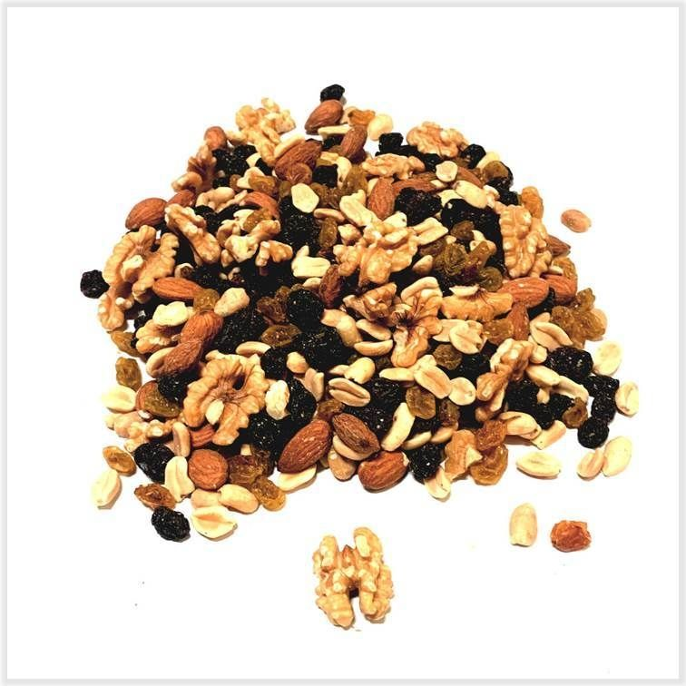
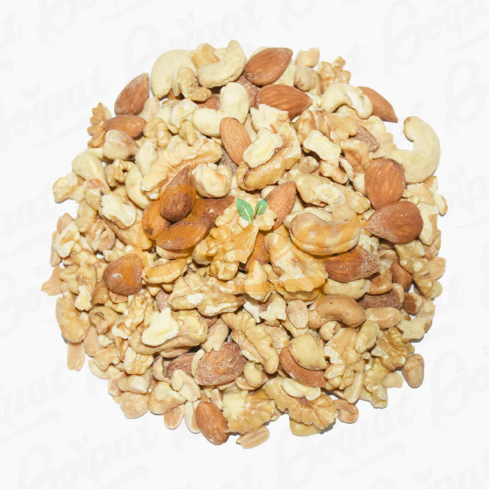
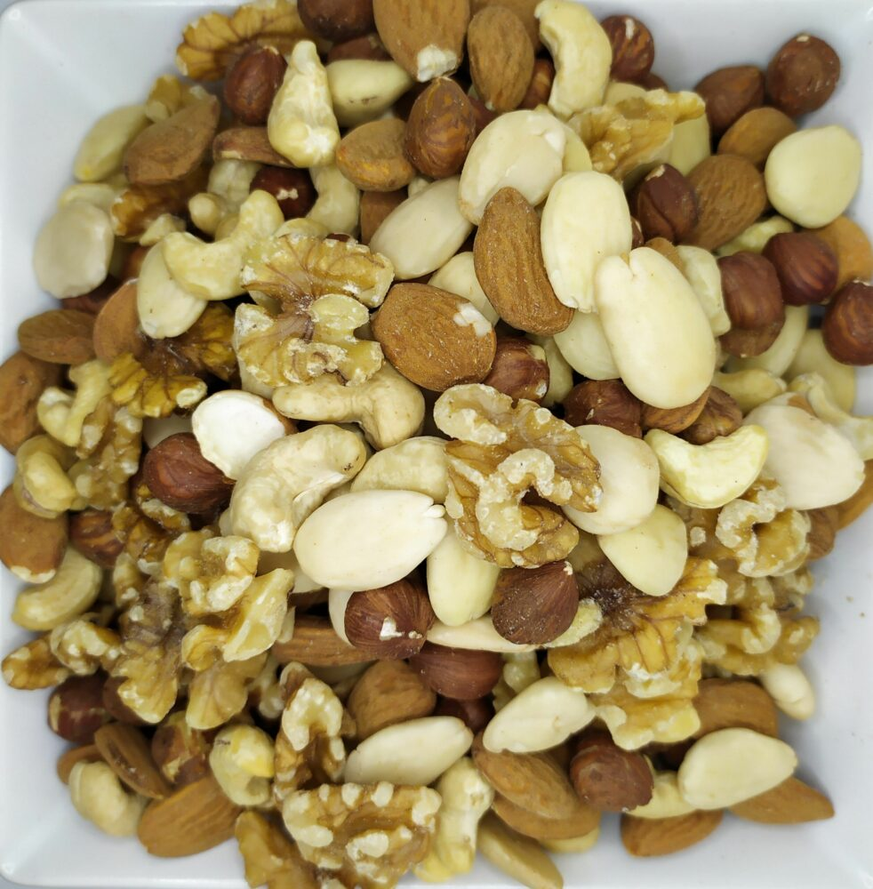

Nuestros Combos
Somos Frutos Secos "Orzechy", emprendimiento importador de alimentos que te ofrece la mejor calidad de productos al mejor precio

Mix Eco
Compuesto por los principales frutos secos, nueces, almendras, pasas de uva morochas y rubias y castañas de caju. Ideal para utilizar como colación en la dieta o para realizar tortas, pan dulces y/o budines.

Mix Natural
Compuesto por los principales frutos secos, nueces, almendras, castañas de caju, pistachos pelado y mani pelado sin sal.

Mix Mediterraneo
Compuesto por los principales frutos secos, nueces, almendras, avellanas y castañas de caju.